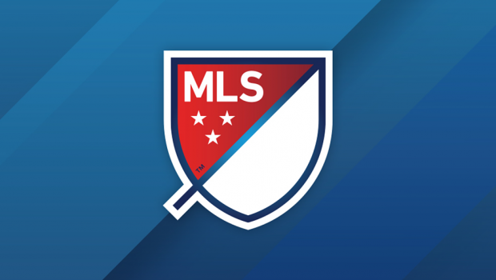
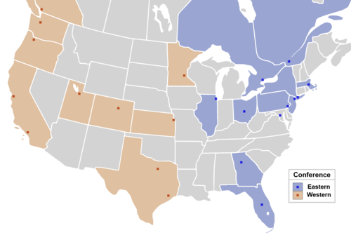

Major League Socccer (MLS)
Major League Soccer (MLS) is a men's professional soccer league sanctioned by U.S. Soccer that represents the sport's highest level in both the United States and Canada. MLS constitutes one of the major professional sports leagues of the United States and Canada.The league comprises 23 teams 20 in the U.S. and 3 in Canada. The MLS regular season runs from March to October, with each team playing 34 games; the team with the best record is awarded the Supporters' Shield. The postseason includes twelve teams competing in the MLS Cup Playoffs through November and December, culminating in the championship game the MLS Cup. MLS teams also play in other domestic competitions against teams from other divisions in the U.S. Open Cup and in the Canadian Championship. MLS teams also compete against continental rivals in the CONCACAF Champions League. 
Major League Soccer was founded in 1993 as part of the United States' successful bid to host the 1994 FIFA World Cup. The first season took place in 1996 with ten teams. MLS experienced financial and operational struggles in its first few years: The league lost millions of dollars, teams played in mostly empty American football stadiums, and two teams folded in 2002. Since then, MLS has expanded to 22 teams, owners built soccer-specific stadiums, average MLS attendance exceeds that of the National Hockey League (NHL) and National Basketball Association (NBA), MLS secured national TV contracts, and the league is now profitable.
Instead of operating as an association of independently owned teams, MLS is a single entity in which each team is owned and controlled by the league's investors. The investor-operators control their teams as owners control teams in other leagues, and are commonly (but inaccurately) referred to as the team's owners. The league has a fixed membership, like most sports leagues in the United States and Canada, which makes it one of the world's few soccer leagues that does not use promotion and relegation, a practice that is uncommon in the two countries.MLS headquarters is located in New York City.
List of teams in the MLS:
Competition Format
Major League Soccer's regular season runs from March to October. Teams are divided into the Eastern and Western Conferences. Teams play 34 games in an unbalanced schedule: 23 matches against teams within their conference, plus 11 matches against teams from the other conference. Midway through the season, teams break for the annual All-Star Game, a friendly game between the league's finest players and a major club from a different league. At the end of the regular season, the team with the highest point total is awarded the Supporters' Shield.
Unlike some soccer leagues around the world, but similar to other leagues in the Americas, the MLS regular season is followed by the 12-team MLS Cup Playoffs in November, ending with the MLS Cup championship final in early December. Although some commentators have argued that playoffs reduce the importance of the regular season,Commissioner Don Garber has explained "Our purpose is to have a valuable competition, and that includes having playoffs that are more meaningful." 
Major League Soccer's spring-to-fall schedule results in scheduling conflicts with the FIFA calendar and with summertime international tournaments such as the World Cup and the Gold Cup,causing several players to miss some MLS matches. While MLS has looked into changing to a fall-to-spring format, there are no current plans to do so. If the league were to change its schedule, a substantial winter break would still be necessary due to teams being located in harsh winter climates.It would also have to compete with the popularity and media presence of the National Football League (NFL) in the fall and winter as well as the National Basketball Association (NBA) and National Hockey League (NHL), which both run on fall-to-spring schedules.
MLS teams also play in other competitions. Every year, up to five MLS teams play in the CONCACAF Champions League against other clubs from the CONCACAF region (Mexico, Central America, and the Caribbean). Two U.S.-based MLS teams qualify based on MLS regular-season results: the winner of the Western conference and the winner of the Eastern conference. The third U.S. team to qualify is the winner of the MLS Cup. A fourth U.S.-based MLS team can qualify via the U.S. Open Cup, where U.S. based teams compete against lower division U.S. clubs. If a team qualifies through multiple berths, or if any of the MLS berths are taken by a Canada-based MLS team, the berth is reallocated to the best U.S.-based team in the Supporters' Shield table which has failed to otherwise qualify. Canadian MLS clubs play against lower division Canadian clubs in the Canadian Championship for the one Champions League spot allocated to Canada. No MLS club has won the Champions League since it began its current format in 2008, with Mexican clubs dominating the competition, but MLS teams have twice reached the final: Real Salt Lake in 2011 and the Montreal Impact in 2015.
Teams
MLS's 22 teams are divided between the Eastern and Western Conferences. Each club is allowed up to 28 players on its first team roster.[32] All 28 players are eligible for selection to each 18-player game-day squad during the regular season and playoffs.
Since the 2005 season, MLS has added many new clubs. During this period of expansion, Los Angeles became the first two-team market, and the league pushed into Canada in 2007.The league expanded from 20 teams to 22 teams in 2017 with the additions of Atlanta and Minnesota, and is expanding to 23 teams in 2018 with the addition of Los Angeles FC.[34] The league plans to have 24 teams by 2018.The league further plans to expand to 26 teams by the beginning of the 2020 season and to 28 teams at a later date. The next two expansion franchises are planned to be awarded during the second or third quarters of 2017 according to a December 15, 2016, announcement by MLS Commissioner Don Garber
In the history of MLS, 23 different clubs have competed in the league, with 11 having won at least one MLS Cup, and 11 winning at least one Supporters' Shield.Six times both trophies have been won by the same club in the same year (two clubs have done it twice).
Click here for Sky Sports Football.
Click here for the premier league standings
Click here for w3schools website.
Note: You can also get to the links by using the "Tab" button on you keyboard.
If you need to make the font bigger please.